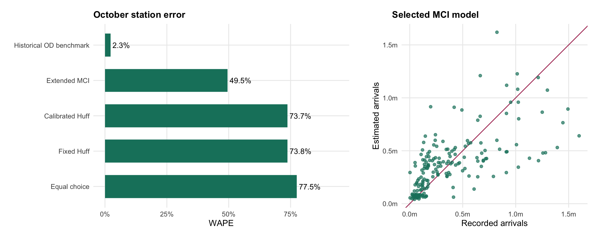
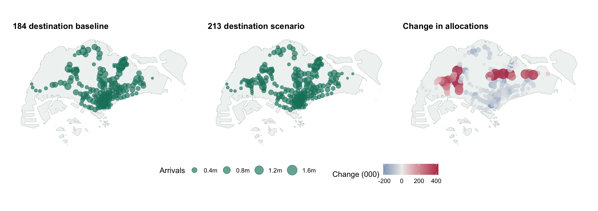
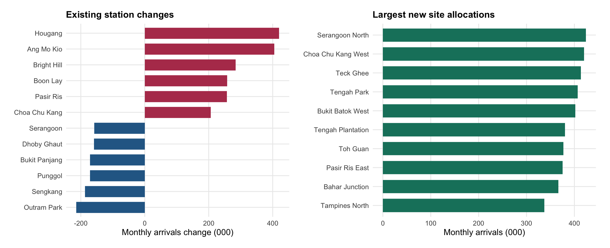
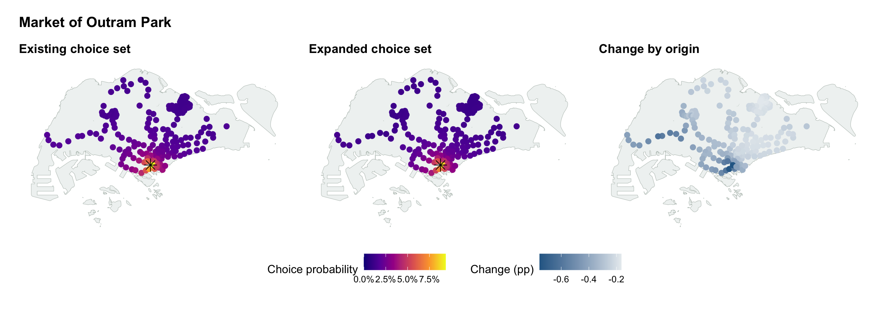
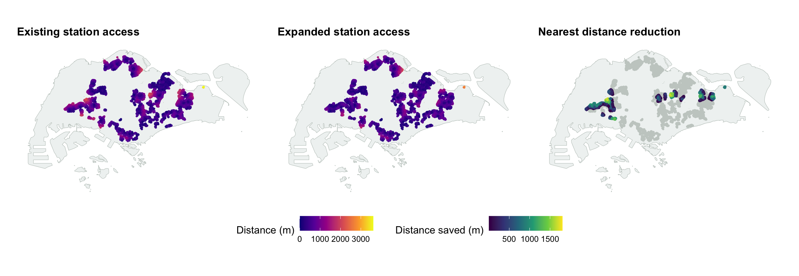
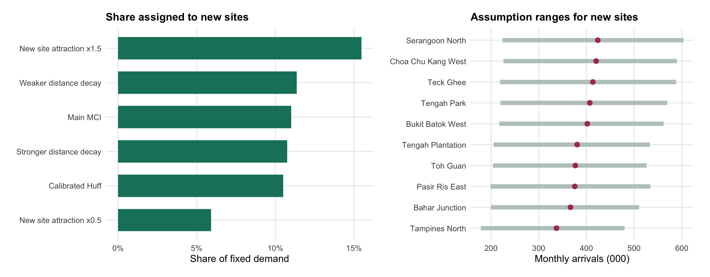

Predictors: straight line distance, bus stops within 800 m, line count, HDB footprint and LRT status.
Evaluation design
Period
Role
August
Fit coefficients
September
Select the structural model
October
Evaluate fixed coefficients
The baseline and future scenarios share October origin totals.
Additional analysis: nearest station accessibility, assumption sensitivity and spatial residual checks.
Model validation

The selected MCI model has 49.5% station WAPE in October. Historical shares perform much better for existing stations, but cannot directly predict new sites.
The future estimates need cautious interpretation. They omit employment, actual rail travel time and service frequency.
Future network scenario

New sites receive 11.0% of fixed demand, about 7.47 million monthly weekday arrivals.
Both networks allocate the same 67.95 million trips. These estimates exclude additional demand from new homes or new origins.
Changes at individual stations

Hougang gains about 420,000 monthly arrivals in this specification. Outram Park loses about 214,000. Serangoon North receives the largest new site allocation.
Interchange gains depend strongly on the fitted line count effect. They do not measure transfer load or crowding.
Existing station markets

The most likely destination changes at 23 of 184 origins. The maps show Outram Park’s allocation from each existing origin before and after expansion.
Huff and MCI redistribute shares through the choice denominator. They keep relative odds between unchanged destinations, which limits the representation of changed routes and transfers.
Added analysis: geographic access

1,320 HDB building records become newly within 800 m. Coverage rises from 72.0% to 81.8%. The west accounts for 731 newly covered records.
Pasir Ris East leads in newly covered buildings (219), while Serangoon North leads the arrival allocation. Demand and access rankings answer different planning questions.
Straight line distances to station points. Building counts include nonresidential HDB structures.
Assumption sensitivity

The five MCI cases assign 5.9% to 15.5% of fixed demand to new sites. The top ranked new site changes. These ranges are stress tests, not confidence intervals.
Calibrated Huff predicts aggregate interchange losses, while MCI predicts gains. The sign depends on whether attraction includes line count.
Planning and public safety
Evidence for follow up
Pasir Ris East and western sites merit checks on crossings, entrances and step free routes because of their access gains.
Hougang and Ang Mo Kio merit detailed interchange flow checks under the MCI scenario.
Both passenger allocation and local access matter when comparing sites.
The study does not establish a reduction in accidents or crowding.
Limits that affect decisions
October error remains high. Residual Moran’s I is about 0.11 to 0.13 across tested neighbours, indicating spatially patterned error.
Monthly arrivals cannot reveal peak occupancy or platform capacity.
New housing, new origins, walking routes and future operating plans need additional data.